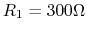
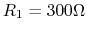
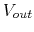

Next: About this document ...
E84 Home Work 10
- The circuit shown in the figure contains a voltage source
 ,
two resistors  and
,
two resistors  and  , and a silicon diode.
Find the voltage
, and a silicon diode.
Find the voltage  across and the current
across and the current  through the diode.
Solve this problem in two different methods: (a) assume voltage
through the diode.
Solve this problem in two different methods: (a) assume voltage  (as the diode is always forward biased), and (b) use the graphic approach
to find the intersection of the load line and the diode equation:
(as the diode is always forward biased), and (b) use the graphic approach
to find the intersection of the load line and the diode equation:
Sketch the plot of the two curves and estimate the solution  at their intersection. (Note that you can assume and
at their intersection. (Note that you can assume and
 at room temperature 300K.)
at room temperature 300K.)

- The circuit shown in the figure contains a voltage source ,
three resistors , , and
 ,
and two silicon diode. Find the voltage across the two parallel branches.
(Hint: assume when the diode is forward biased.)
,
and two silicon diode. Find the voltage across the two parallel branches.
(Hint: assume when the diode is forward biased.)

- The circuit shown in the figure is a converter (adaptor) based on
a full-wave rectifier, which gets an AC voltage input of 115V 60 Hz, and
produces a 12V DC output. The voltage variation or ripple of the output
should not exceed 5% when the load current is no more than 2A. Design
the converter in terms of the turn ratio of the transformer and the
value of the capacitor.

- The input voltage to the circuit in the following figure is
. The two DC voltages are both 5V. Sketch the
waveform of the output voltage .

- Assume each of the input voltages
 and
and  takes one of
two values, either 0V or 5V. Find the output voltage in the
following combinations of three input:
takes one of
two values, either 0V or 5V. Find the output voltage in the
following combinations of three input:
|
0V |
0V |
5V |
5V |
|
0V |
5V |
0V |
5V |
|
|
|
|
|

Next: About this document ...
Ruye Wang
2008-04-16